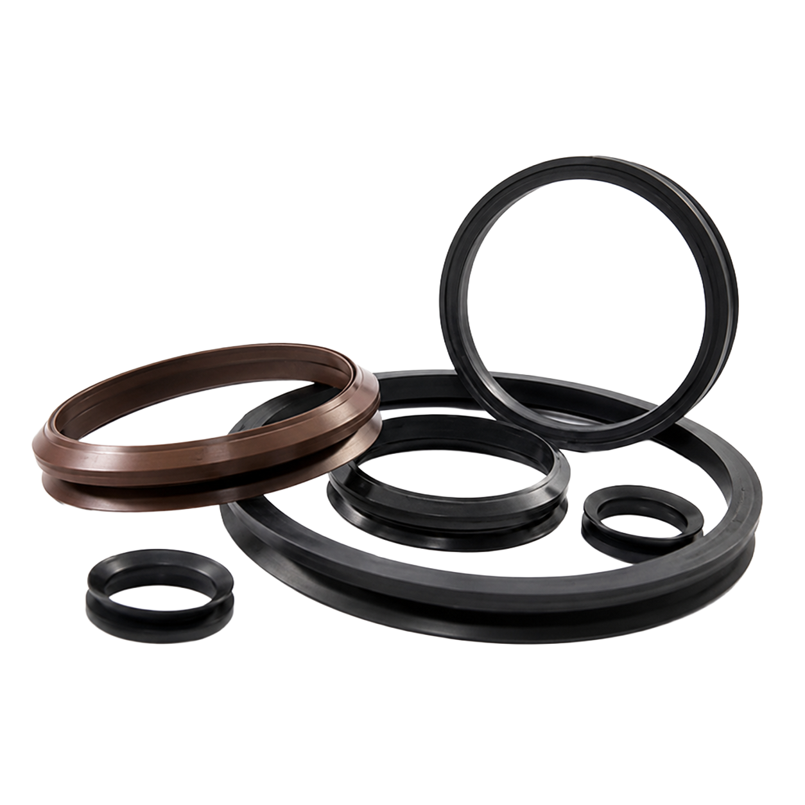

03 · Estanqueidad
Juntas Tóricas
Más de 5.000 referencias en NBR, EPDM, VMQ, FKM y PTFE, para aplicaciones dinámicas y estáticas en cualquier sector industrial.

Por qué comprarlo en Sumifluid
Juntas Tóricas con garantía de suministro
Guía técnica
Todo sobre las Juntas Tóricas
La junta tórica (o-ring) es el elemento de estanqueidad más utilizado en la industria: un anillo de sección circular que se aloja en un canal y se comprime entre dos superficies para impedir el paso de líquidos o gases. Puede trabajar en sellado estático, entre piezas fijas, o dinámico, entre piezas con movimiento relativo como un vástago, siempre que la presión y la holgura del alojamiento estén dentro de los límites del material. Disponemos de más de 5.000 referencias en los materiales técnicos más habituales: NBR, EPDM, VMQ, FKM y PTFE. La elección del material depende sobre todo del fluido, la temperatura y el tipo de aplicación.
Especialistas en juntas tóricas de todo tipo
Somos especialistas en juntas tóricas de todo tipo, con más de 5.000 referencias en stock permanente y una amplia experiencia asesorando sobre el material más adecuado para cada aplicación. Tanto si necesita una medida estándar como una referencia poco habitual, le ayudamos a identificar el diámetro, la sección y el material exactos que su instalación requiere.
Tipos de juntas tóricas para cualquier solución
El material es la principal variable a la hora de elegir una junta tórica, en función del fluido, la temperatura y el tipo de aplicación:
- NBR (nitrilo), el más habitual para aceites y grasas minerales de uso general
- EPDM, para agua, vapor y algunos productos químicos, pero no compatible con aceites minerales
- VMQ (silicona), para temperaturas extremas y aplicaciones alimentarias o sanitarias
- FKM (Viton), para altas temperaturas y fluidos agresivos o hidrocarburos
- PTFE, para máxima resistencia química, aunque con menor elasticidad que un elastómero
- Referencias según normas ISO 3601 y AS568, además de medidas métricas a medida
Características de las juntas tóricas de Sumifluid
Estas son las características principales de nuestro catálogo de juntas tóricas, junto con algunos consejos técnicos:
- Más de 5.000 referencias en stock permanente en nuestro almacén de Elche
- Se identifican por el diámetro interior y el grosor de sección, no por el diámetro exterior
- En aplicaciones dinámicas de alta presión conviene combinarlas con un aro de apoyo para evitar la extrusión
- La dureza, medida en Shore A, también influye en la elección, junto con el material
- Fabricamos juntas a medida cuando el diámetro o el material no están en catálogo estándar
- Conviene comprobar la compatibilidad química del material con el fluido antes de sustituir una junta
En Sumifluid le ofrecemos todo tipo de juntas tóricas sin necesidad de desplazarse, con la máxima calidad y los precios más competitivos. Operamos en toda España, gestionando su pedido en 24/48 horas. Contacte con nuestro técnico profesional y encuentre la mejor respuesta para su aplicación: rellene el formulario de presupuesto o llámenos al 662 26 47 78 o al 966 673 618.
Otras familias
Más categorías de Estanqueidad


Preguntas frecuentes sobre juntas tóricas
¿Qué material de junta tórica debo usar según el fluido?
¿Cómo sé qué medida de junta tórica necesito?
¿Tenéis más de 5.000 referencias en stock realmente?
¿Fabricáis juntas tóricas a medida si no encuentro mi diámetro?
Contacto directo
¿Necesita juntas tóricas?
Consúltenos disponibilidad, plazos y precio sin compromiso. Le respondemos en horario laboral.